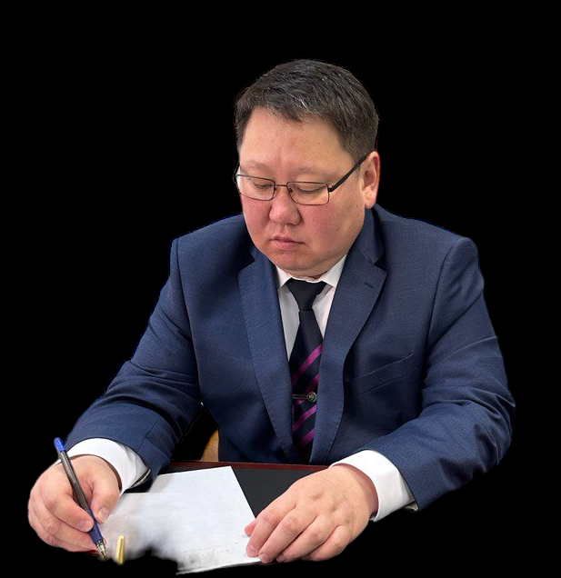

- С 2003 года работал в органах прокуратуры России следователем, прокурором по надзору за процессуальной деятельностью органов следствия, оперативно-розыскной деятельностью.
- С 2019 года действующий уголовный адвокат Москвы. Имеется запись в Реестре членов Адвокатской палаты города Москвы.
- Опыт работы по уголовным делам более 20 лет.
- Осуществляю срочный выезд к месту задержания.
- Обеспечиваю безопасность от незаконных методов дознания
- Честно прогнозирую исход дела и перспективы.
- Добиваюсь переквалификации на менее тяжкую статью.
- Тщательно и качественно разрабатываю стратегию защиты.
- Принимаю все меры для освобождения задержанных и арестованных
Наша специализация -это помощь Гражданам которым грозит
задержание
или
заключение под
стражу.
Узкая специализация позволяет нам быстро и эффективно защищать интересы наших доверителей.
Более 80% дел в которых мы защищали интересы заканчивались для наших доверителей с наилучшим результатом которого не ожидали наши доверители.
Залог успеха в этих делах было незамедлительное вступление в дело наших Адвокатов.
Сотрудники полиции часто используют незаконные методы допроса. Наши адвокаты знают как защитить вас от давления со стороны полиции. Главная Ваша задача для обеспечения вашей безопасности - незамедлительно обратиться к профессиональной помощи Адвоката.
Связаться с нами можно любым удобным для вас способа прямо с этого сайта.
Адвокаты Московской коллегии Адвокатов
Валентин Кротов
Самбу Цыбакжапов
Валентин Кротов

Самбу Цыбикжапов
- С 2003 года работал в органах прокуратуры России следователем, прокурором по надзору за процессуальной деятельностью органов следствия, оперативно-розыскной деятельностью.
- С 2019 года действующий уголовный адвокат Москвы. Имеется запись в Реестре членов Адвокатской палаты города Москвы.
- Опыт работы по уголовным делам более 20 лет.
- Осуществляю срочный выезд к месту задержания.
- Обеспечиваю безопасность от незаконных методов дознания
- Честно прогнозирую исход дела и перспективы.
- Добиваюсь переквалификации на менее тяжкую статью.
- Тщательно и качественно разрабатываю стратегию защиты.
- Принимаю все меры для освобождения задержанных и арестованных